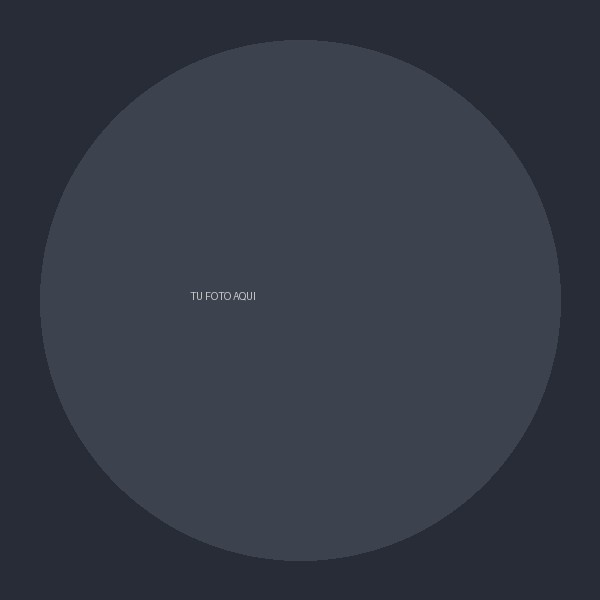

Procurement Strategist & Data Intelligence Lead
Reemplaza este texto con tu propuesta de valor en 1–2 frases: qué problema resuelves, para quién y con qué enfoque diferenciador dentro de procurement / supply chain / data.

Reemplaza este bloque con tu resumen profesional: años de experiencia, industrias en las que has trabajado, y el tipo de impacto que generas (ahorro de costos, automatización, reducción de riesgo, etc.).
Segundo párrafo opcional: menciona tu enfoque de trabajo, herramientas clave (ERP, BI, RPA, IA) y el tipo de organizaciones con las que sueles colaborar.
Reemplaza este texto con una invitación breve a contactarte: para qué tipo de proyectos, roles o colaboraciones estás disponible.